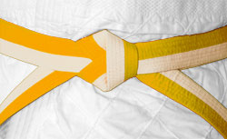
8 Kyu
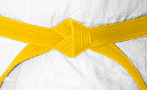
7 Kyu
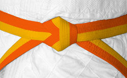
6 Kyu
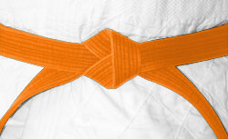
5 Kyu
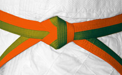
4 Kyu
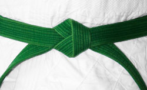
3 Kyu
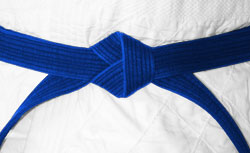
2 Kyu
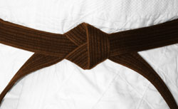
1 Kyu
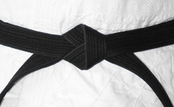
1-5 Dan
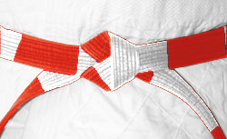
6-8 Dan
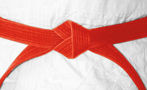












An der Gürtelfarbe kann man den Ausbildungsstand des Judoka erkennen. Das ist eine relativ moderne Entwicklung. In Japan existieren nur weiße (Schüler) und schwarze (Meister) Gürtel. Die Gürtelprüfungen sind keine Pflicht. Ein Judoka mit einem niedrigen Gürtelgrad kann durchaus über ein beachtliches Wissen und Können verfügen. Jeder Anfänger beginnt mit einem weißen Gürtel. Nach entsprechender Trainingszeit kann er eine Prüfung vor einer Prüfungskommission ablegen. Der Prüfling demonstriert einfache Falltechniken und Techniken mit einem Partner (je nach Höhe der Graduierung mehr oder weniger schwierig). Nach abgelegter Prüfung erhält der Prüfling das Recht und die Pflicht den entsprechenden Gürtel zum Judogi (Anzug) zu tragen.
"Der erste Schritt auf dem Weg des Judo. Sei offen, lerne die Grundlagen und habe Geduld mit dir selbst. Jeder Meister begann als Anfänger."
Bedeutung: Der Weißgurt steht für Reinheit und den Beginn der Reise. Hier lernst du Falltechniken (Ukemi), Grundwürfe wie O-Soto-Otoshi und das Prinzip des "Siegen durch Nachgeben" (Ju no Ri).
"Die ersten Farben zeigen deinen Fortschritt. Übe mit Geduld – Judo ist ein Weg, kein Sprint."
Techniken: O-Goshi, De-Ashi-Barai, erste Bodengriffe (Kesa-Gatame).
"Wie eine junge Pflanze wächst auch dein Judo. Pflege es mit Disziplin und Freude. Jede Trainingseinheit macht dich stärker."
Bedeutung: Der Gelbgurt symbolisiert die ersten Wurzeln des Wissens. Techniken wie O-Goshi (Hüftwurf) oder Tai-Otoshi werden vertieft, und du beginnst, Judo als Ganzkörpersport zu verstehen.
"Die Mischung zeigt: Du verbindest Wissen. Arbeite an deiner Bewegung wie ein Handwerker an seinem Meisterstück."
Techniken: Ko-Soto-Gake, Kombinationen (Renraku-Waza).
"Feuer und Begeisterung! Nutze deine Energie klug – Judo ist ein Schachspiel mit dem Körper."
Techniken: Harai-Goshi, Uchi-Mata, erste Kontertechniken (Kaeshi-Waza).
"Die Natur wächst in Ruhe. Dein Judo wird vielseitiger – bleibe flexibel wie ein Bambus."
Techniken: Okuri-Ashi-Barai, Juji-Gatame (Armhebel), erste Anwendungen im Randori.
"Wie ein Baum festigt sich dein Können. Bleibe bescheiden, aber vertraue deinen Fähigkeiten."
Bedeutung: Der Grüngurt symbolisiert Wachstum. Du lernst komplexere Würfe wie Harai-Goshi und beginnst, Strategien im Randori (Übungskampf) zu entwickeln.
"Das Wasser passt sich an, ohne seine Kraft zu verlieren. Lerne, flexibel zu sein – im Technik und im Geist."
Bedeutung: Der Blaugurt steht für Anpassungsfähigkeit. Techniken wie Uchi-Mata (Schenkelwurf) und erste Bodentechniken (Osae-Komi-Waza) werden wichtiger.
"Die Erde ist stabil und trägt Früchte. Dein Judo trägt jetzt sichtbare Ergebnisse – doch der Weg geht weiter."
Bedeutung: Der Braungurt symbolisiert Reife. Vorbereitung auf den Schwarzgurt: Alle Stand- und Bodentechniken müssen sicher beherrscht werden, ebenso die Anwendung im Wettkampf.
"Der schwarze Gürtel ist kein Ziel, sondern ein neuer Anfang. Jetzt verstehst du: Judo formt nicht nur den Körper, sondern den Charakter."
Bedeutung: Reife, Meisterschaft.
"Weiß steht für Weisheit, Rot für Leidenschaft. Du bist jetzt Hüter der Tradition – doch Innovation bleibt dein Pflicht."
Bedeutung: Harmonie von Erfahrung und Vision.
"Der rote Gürtel ist wie die aufgehende Sonne – er leuchtet für alle. Dein Judo ist jetzt ein Erbe für die nächsten Generationen."
Bedeutung: Höchste Weisheit, Vermächtnis.